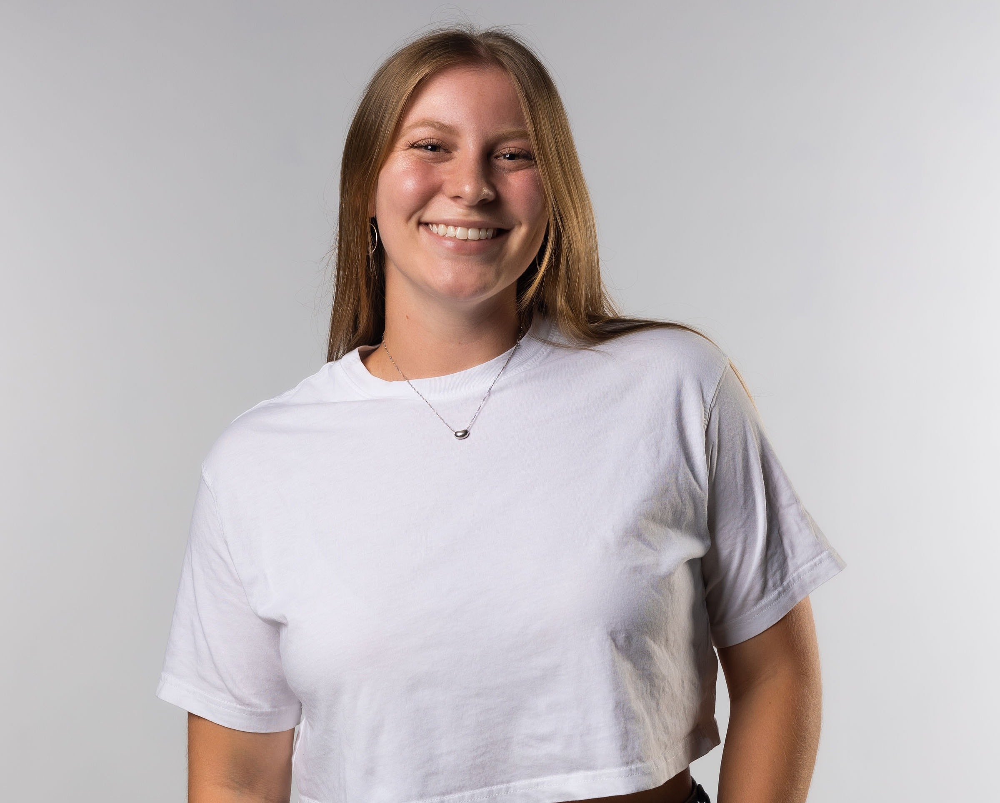

About
Where it all Began
KL Thrift first began in 2022 when founder Kailey Latin had the idea to do a clothing swap with her friends and family in San Luis Obispo. As a college student at Cal Poly, she quickly realized second hand consumption was the only guilt free way to scratch the shopping itch. She wanted to create a permanent space where San Luis Obispo's eco-conscious shoppers could spend an afternoon doing good for the planet and local business.
Sustainability
All pieces in-store and online at KL Thrift are sourced in the central coast on a donation basis. Many of our items have been given a second life by our on-staff experts, who have serious sewing skills. Our goal is to produce as little waste as possible while putting existing garments back on the market, reinforcing the cyclical nature Mother Earth intends for us.